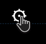
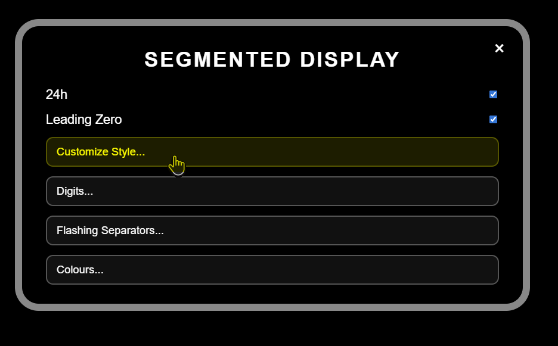
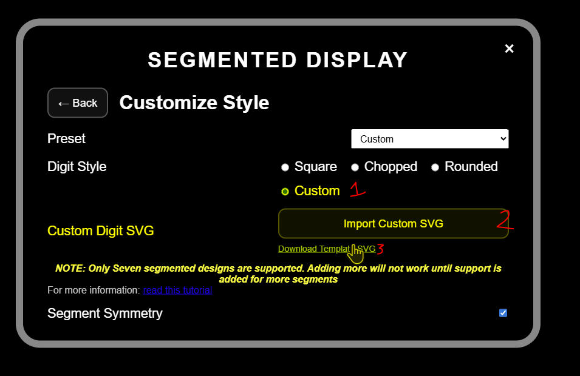
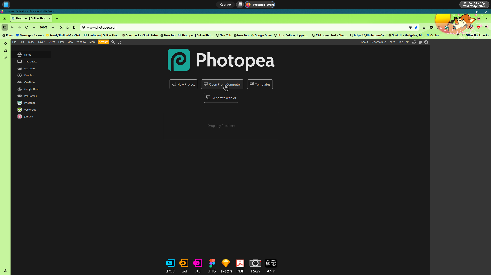
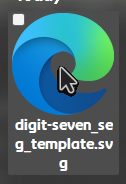
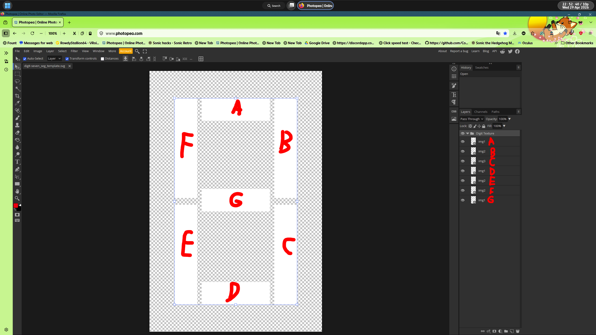
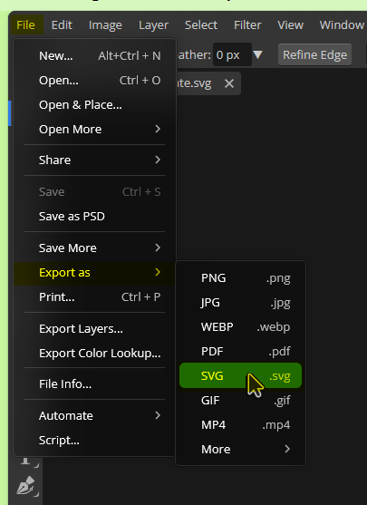
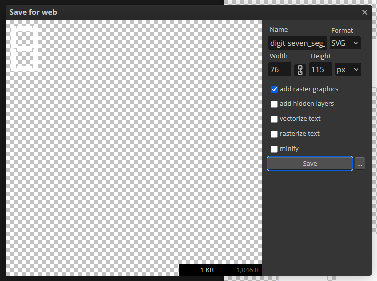
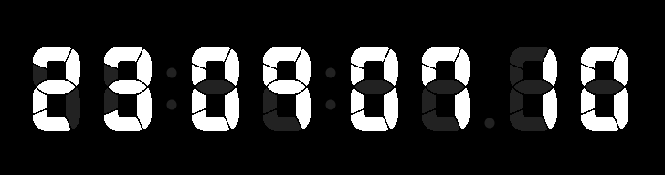

On this page you will learn how to make and import custom digits for the Segmented Display Real-Time Clock.
First you will need the template SVG to make the changes to.
First open the settings menu

After that, head to the Customize Style... section

Under the Digit Style you will find a link that reads Download Template SVG

From here you can open the SVG into a photo editing app you'd like (as long as SVGs are supported).
In this example we will use the web-based Photoshop alternative, Photopea and add the SVG you just downloaded from the clock
Select IMPORT in your app or Drag and Drop


From here you may modify the SVG or use your own set of sprites for the segments, using the writing on the screenshot below as a point of reference for each layer

Once you are done making your changes, click on FILE > EXPORT AS > SVG

For the best results, we recommend that you use the settings below

Do note that you are allowed to rename the file to not confuse it with another style you have, just make sure that you did not resize the image in the making
Once you are done making your new digit, head to Settings > Customize Style...
From there you can now click Import Custom SVG and enjoy your new style!
